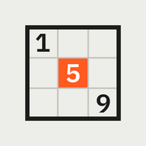
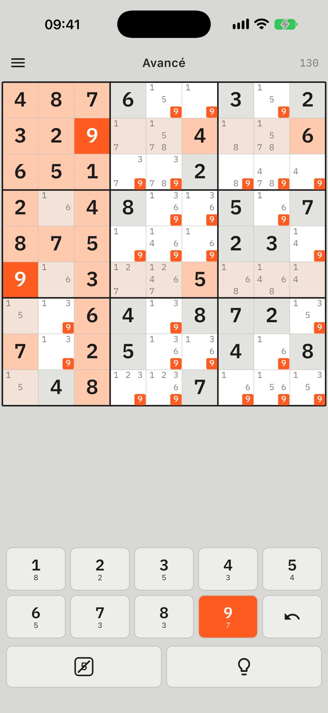
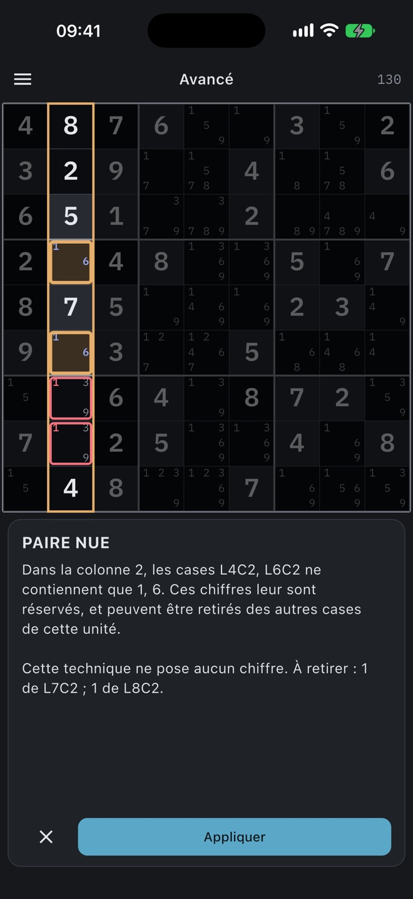

CC Sudoku
Pour iPhone et iPad
Un sudoku précis dans une ambiance calme, ponctuée d'un coucou quand tu débloques un chiffre. Quand tu bloques, il t'explique la technique avant de te donner la réponse.
Bientôt sur l'App Store




Un indice en trois temps
- Expliquer : le nom de la technique, son principe et la zone où regarder. Souvent, ça suffit pour trouver seul.
- Voir : les cases qui forment le motif, en couleur, avec le raisonnement complet.
- Appliquer : le coup est joué, si tu le souhaites.
Six niveaux, du Débutant au Diabolique
Chaque grille est classée d'après les techniques qu'elle demande vraiment : les singles au niveau Débutant, puis les paires, le X-Wing et le Y-Wing, jusqu'aux chaînes du niveau Diabolique. Chaque grille a une solution unique et se résout par la logique, sans deviner.
Raisonner rapporte
Un chiffre déduit rapporte 10 points, un chiffre deviné juste seulement 5. Termine une grille sans indice ni erreur, et tu gagnes trois étoiles. Tes statistiques suivent tes grilles, tes records et ta série de jours.
Un jeu qui s'écoute
La musique suit ta partie : discrète au début, elle s'enrichit à mesure que la grille se remplit. Le mode Zen coupe la musique et les points, pour jouer au calme.
Rien ne sort de ton appareil
Sans publicité, sans compte, sans collecte de données. L'app ne se connecte pas à Internet. Politique de confidentialité
Une question ?
La page Assistance répond aux questions fréquentes. Sinon, écris à cc-sudoku@hammer-marteau.com.